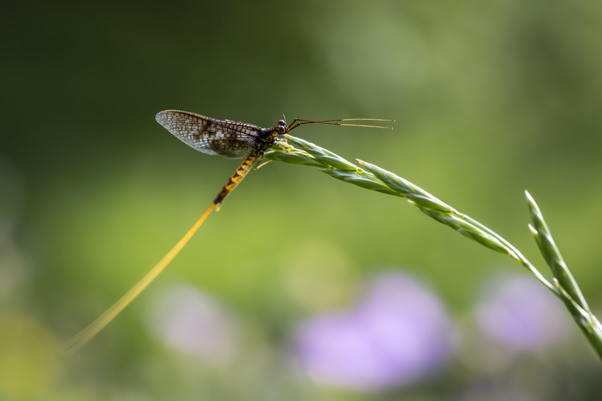
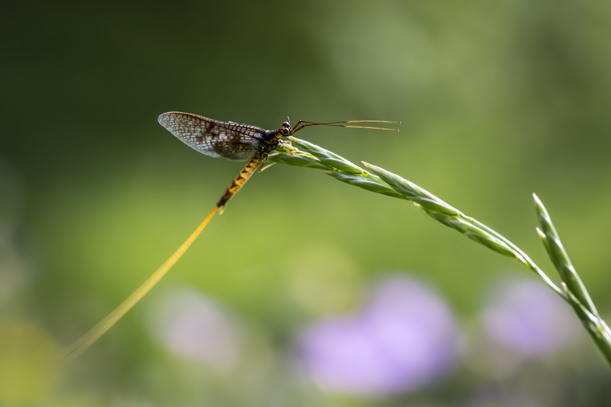

Grasshoppers: Nature's Leapers Grasshoppers
are common insects known for their powerful hind legs that allow them to jump incredible distances.
Let's explore some fascinating facts about these creatures.
are common insects known for their powerful hind legs that allow them to jump incredible distances.
Let's explore some fascinating facts about these creatures.
Physical Characteristics:
Powerful hind legs: Used for jumping.
Strong chewing mouthparts: Adapted for eating plant matter.
Two pairs of wings: Though not all species fly.
Varied colors: Often blend in with their surroundings for camouflage
Strong chewing mouthparts: Adapted for eating plant matter.
Two pairs of wings: Though not all species fly.
Varied colors: Often blend in with their surroundings for camouflage
Life Cycle
Grasshoppers undergo incomplete metamorphosis, meaning they don't have a pupal stage.
Egg: Laid in soil or on plants.
Nymph: Resembles a smaller version of the adult, molting several times as it grows.
Adult: Fully developed with wings.
Egg: Laid in soil or on plants.
Nymph: Resembles a smaller version of the adult, molting several times as it grows.
Adult: Fully developed with wings.
Behavior and Habitat:
Herbivores: Primarily feed on grasses and other plants.
Habitat: Found in a variety of environments, including grasslands, meadows, and gardens.
Jumping: Their main mode of transportation, allowing them to escape predators.
Sound production: Many species produce sounds by rubbing their legs against their wings.
Habitat: Found in a variety of environments, including grasslands, meadows, and gardens.
Jumping: Their main mode of transportation, allowing them to escape predators.
Sound production: Many species produce sounds by rubbing their legs against their wings.
Interesting Facts
Locusts: Some grasshopper species can undergo a phase change and become locusts,
forming swarms that can cause significant crop damage.
Predators: Grasshoppers are a food source for birds, reptiles, amphibians, and some mammals.
Human consumption: In many cultures, grasshoppers are considered a delicacy and are eaten as a source of protein
forming swarms that can cause significant crop damage.
Predators: Grasshoppers are a food source for birds, reptiles, amphibians, and some mammals.
Human consumption: In many cultures, grasshoppers are considered a delicacy and are eaten as a source of protein